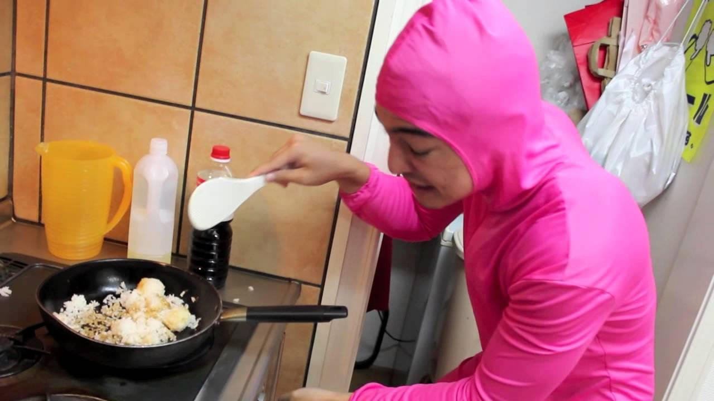

Odin Recipes
Pink Guy's Fried Rice Recipe
- Soak and clean rice before cooking it with rice cooker
- Allow the cooked rice to release steam and cool down
- Dice onion and garlic. You can also add some lemon grass
- Put ample amount of oil in the pan. Allow it to gain some heat before putting the diced ingredients
- Let it become brownish before adding the rice
- Put some soysauce to make the rice darker and you can also add an egg for some binding effect
- Enjoy!